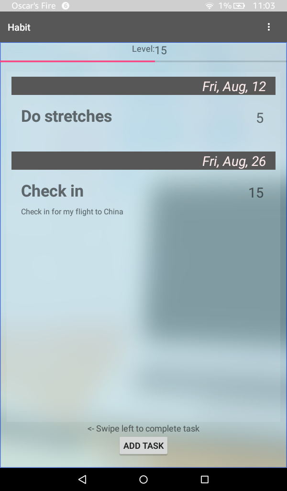
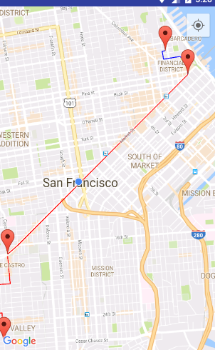
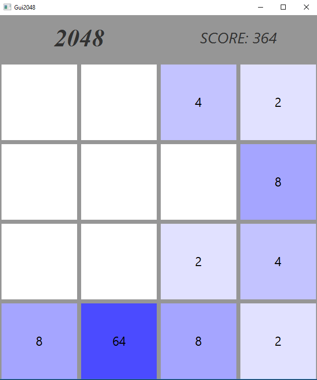
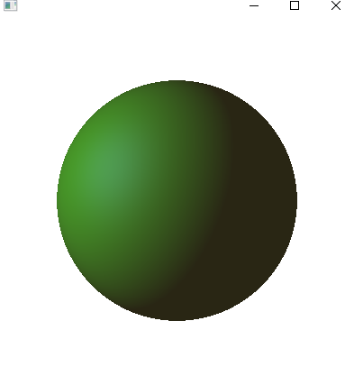

2015-2016
-
Android Task Planner App


Planning application that allows
a user to assign tasks to dates,
with a reward and punishment
system. -
Transit Routes Assistant

Map application that acts as a
more streamlined assistant for
transit trips. -
Twitter Word Associations

Given an inputted word or group
of words, runs an active Twitter
stream to retrieve words currently
tweeted most alongside it.
2011-2014
-
Mock 2048 Game
 -
Phong Illumination Model
 -
My old Processing blogspot
My Processing Blogspot!